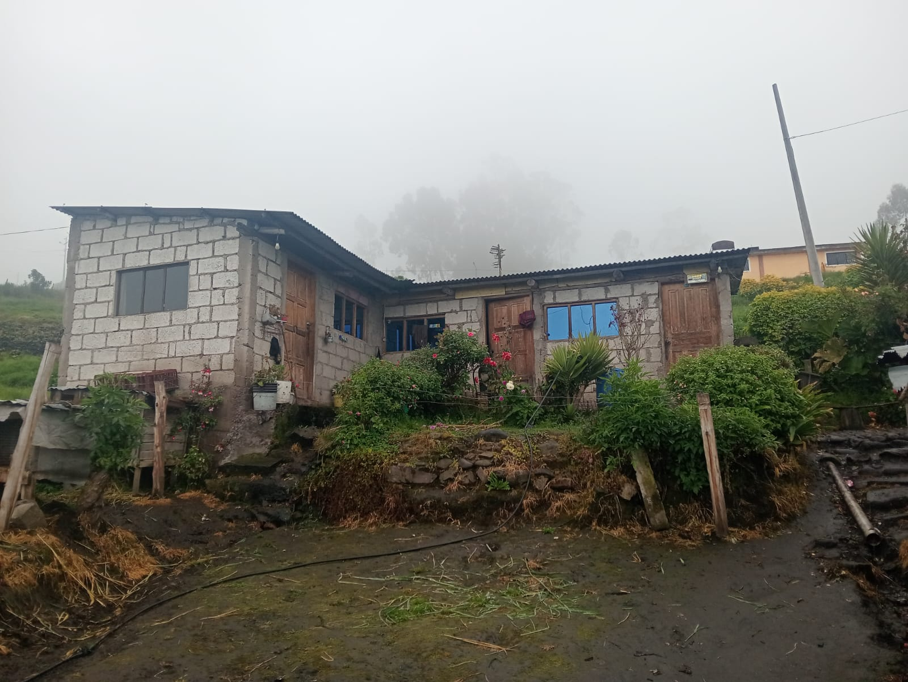
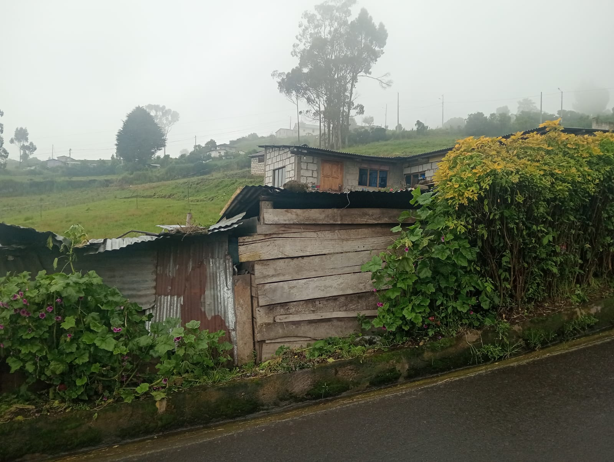
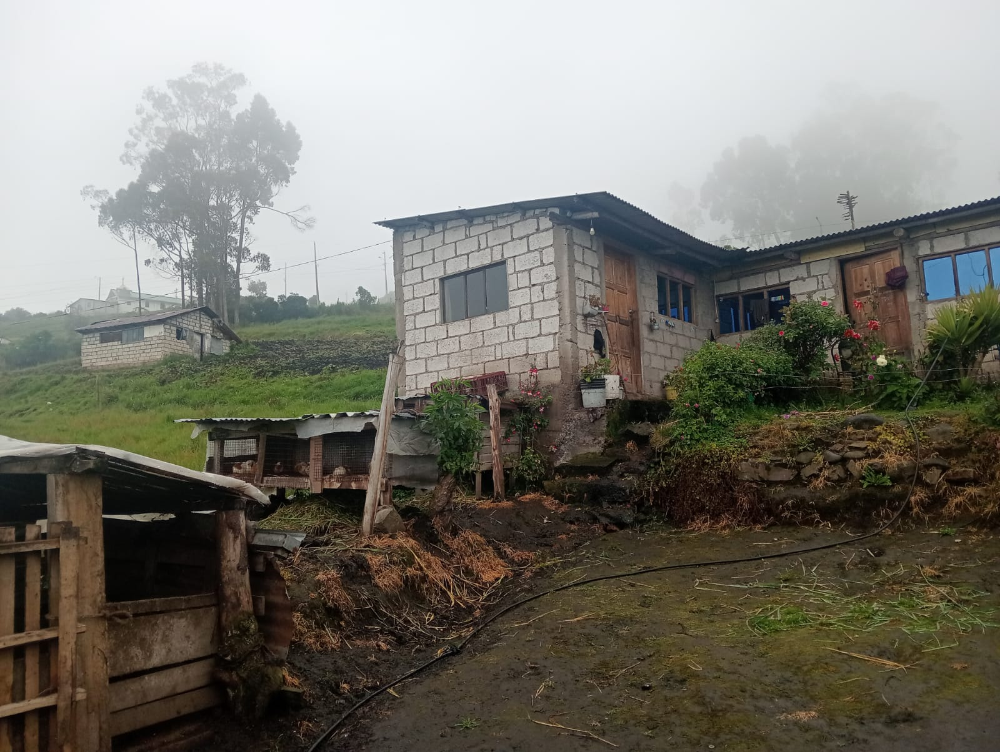
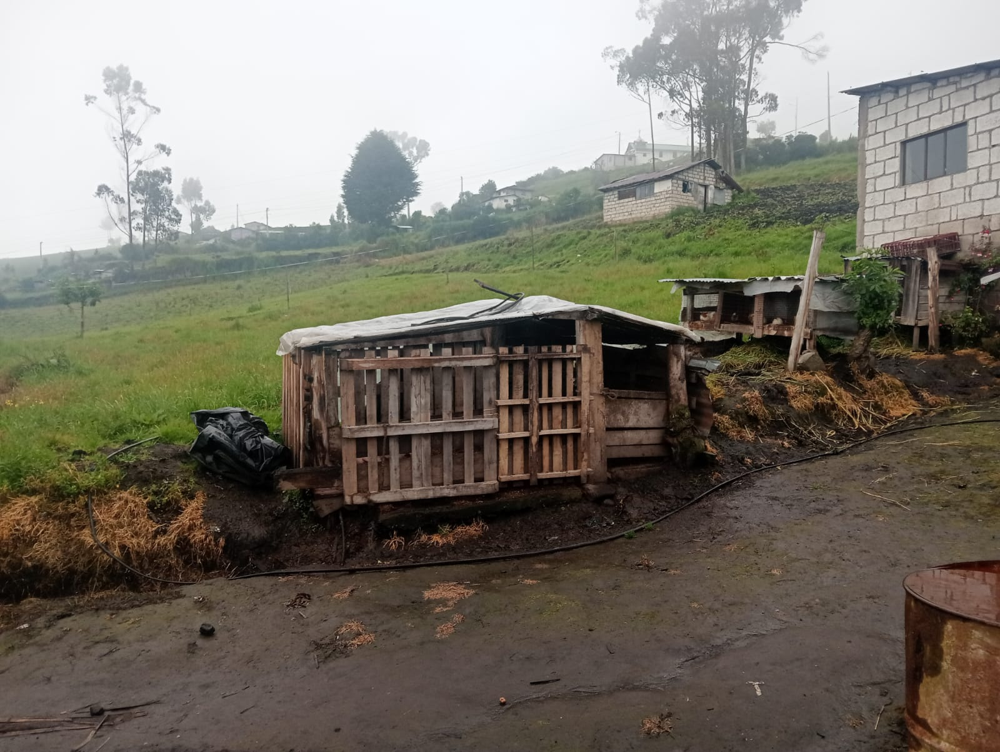
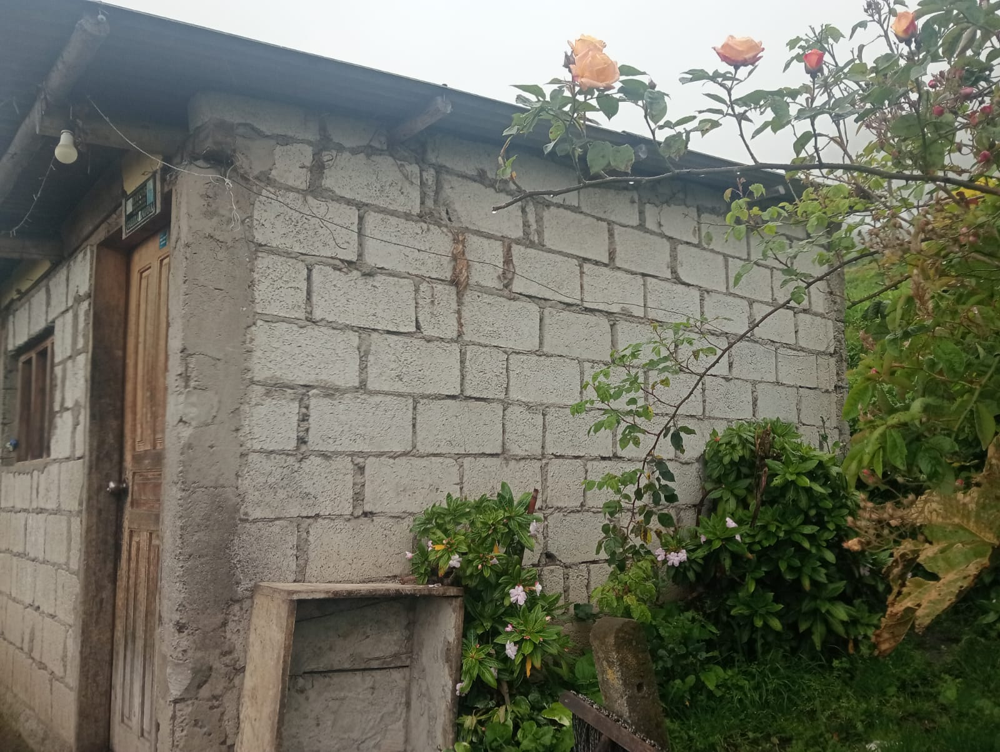
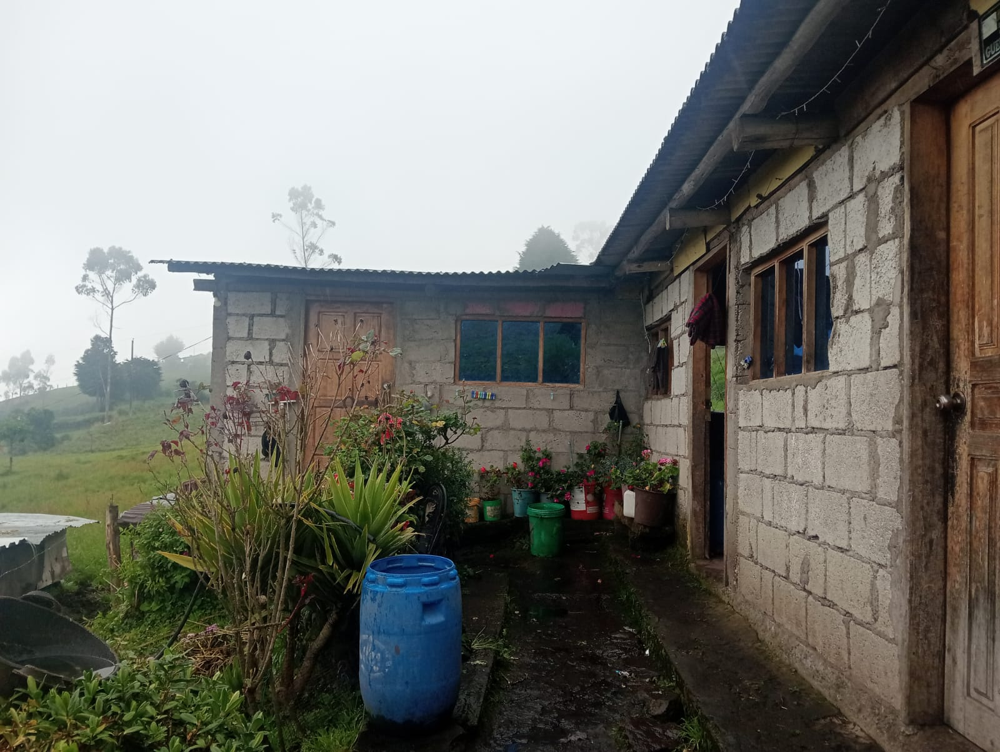
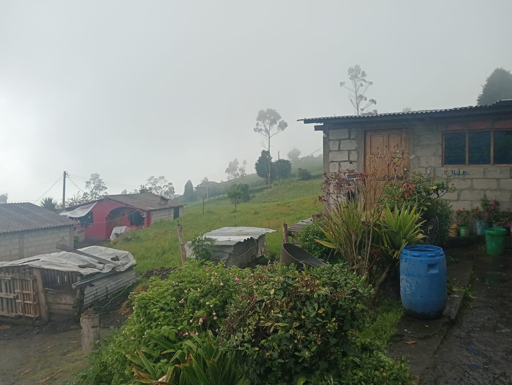
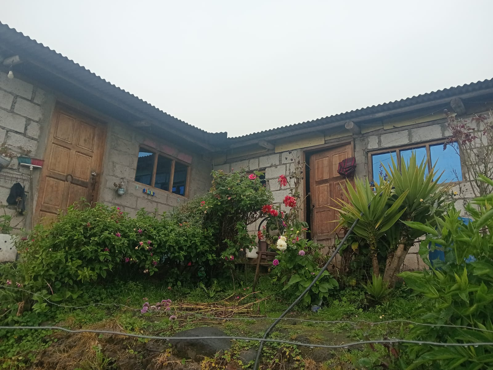

← volver al mapa
Terreno - EC-RJ-154764
EC-RJ-154764 · terreno · PILLARO, Tungurahua
★ Oferta destacada








Datos del remate
| Avalúo pericial | $13,131 |
| Tipo de bien | terreno |
| Área de construcción | 46.52 m² |
| Área de terreno | 865.00 m² |
| Cantón / Provincia | PILLARO, Tungurahua |
| Dirección / Sector | Parroquia LA MATRIZ Sector/Barrio BARRIO POALO -HUAGRAHUASI Calles ASFALTADA SN. norte 9875093 este 780566 a.s.n.m 3351 |
| Señalamiento | Primer Señalamiento |
| Fecha de remate | 2026-09-01 |
| No. de proceso | 18333202200335 |
Análisis vs. mercado
| Avalúo por m² | $15/m² |
| Mediana de mercado en la zona | $60/m² |
| Descuento vs. mercado | 74.8% |
| Comparables usados | 66 |
| Radio de búsqueda | 2000 m |
| Puntaje | 92/100 |
Descripción completa del avalúo
terreno forma irregular y topografía ligera pendiente construcciones : si obras complementarias ; no el bien inmueble en estudio presenta una forma irregular, de topografía ligera pendiente , localización medianera , el acceso a la propiedad se los realiza por uan via asfaltada , el lote posee los servicios básicos como energía eléctrica, agua potable, tiene alcantarillado, si existe transporte .
• estructura: hormigon , cadenas, cimientos y columnas . • contrapiso planta baja : hormigón simple . • paredes: mampostería bloque sin enlucir ni pintar • puerta principal: de madera • cubierta: estructura de madera y zinc • ventanas de de hierro con vidrio claro • instalaciones eléctricas: existe instalaciones electricas • instalaciones sanitarias: no se observa medidor de agua potable y acometida sanitaria . • edad construcción: 10 años aproximadamente
norte 9875093 este 780566 a.s.n.m 3351
Límites: norte: en parte propiedad de los vendedores en una longitud de 24,56 metros y en otra propiedad de susana guerra en una longitud de 10 metros sur: en parte camino público en una longitud de 25,25 metros y en otra propiedad de leidy guerra en una longitud de 10 metros este: propiedad sobrante de los vendedores en una longitud de 30.71 metros oeste: propiedades de susana guerra, raúl guerra y leidy guerra en una longitud de 10 metros
Clave catastral: 18-08-50-69-00-10-96
Periodo de posturas: 01/09/2026 00:00:00 a 01/09/2026 23:59:59
Dependencia jurisdiccional: UNIDAD JUDICIAL MULTICOMPETENTE CON SEDE EN EL CANTON PILLARO
Análisis de inversión
⚠ Dudosa — revisar bienBuenos servicios básicos y acceso por vía asfaltada; sin área registrada para evaluar precio.
A favor:
- Buenos servicios y acceso
En contra:
Análisis elaborado a partir de la descripción del avalúo — no es asesoría legal ni financiera.
Esta ficha es una copia de lo publicado en el sitio oficial de remates
judiciales de la Función Judicial del Ecuador, para consulta — no
reemplaza el expediente judicial. remates.funcionjudicial.gob.ec no da
un link propio por remate, por eso se generó esta página aparte.
Antes de ofertar, el expediente debe revisarlo un abogado.